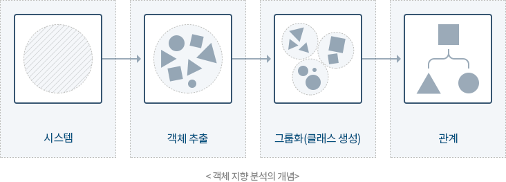

기본개념
- 현실 세계를 그대로 모형화 → 사용자, 개발자가 쉽게 이해 가능
- 구조적 기법의 문제점으로 인한 소프트웨어 위기의 해결책으로 채택되어 사용
- 소프트웨어 재사용 및 확장을 용이하게 함으로써 고품질 소프트웨어를 빠르게 개발할 수 있고, 유지보수가 쉽다

객체지향 모델링 방법
Rumbaugh방법 |
분석 활동을 객체 모델링, 동적 모델링, 기능 모델링으로 나누어 수행하는 방법 |
|---|---|
Booch방법 |
미시적(micro) 개발 프로세스와 거시적(macro) 개발 프로세스를 모두 사용하는 분석 방법
|
Jacobson방법 |
|
Coad와 Yourdon방법 |
|
Wifs-Brock방법 |
|
UML방법 |
|